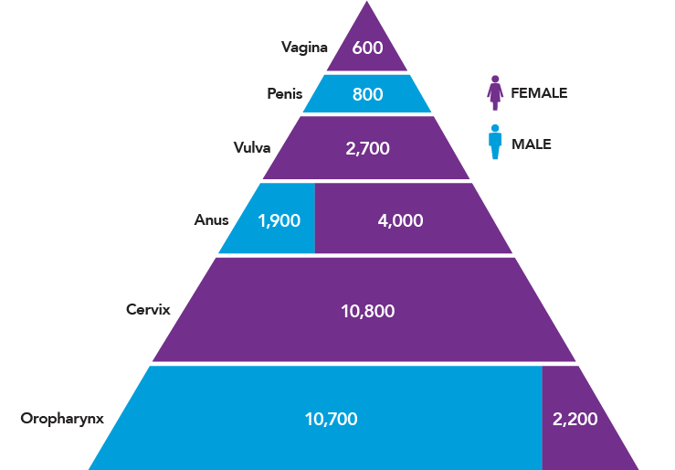

The Current Landscape of HPV Cancers and HPV Vaccination
Human papillomaviruses (HPV) cause nearly 630,000 cases of cancer worldwide each year. The majority—530,000—are cervical cancers, but HPV also is responsible for about 100,000 cancers at five other sites, including the oropharynx, anus, penis, vulva, and vagina.1* In 2006, the first HPV vaccine was approved, making available a powerful new tool for preventing cancers and other diseases caused by these viruses. Two additional HPV vaccines were approved in 2009 and 2014. Despite extensive evidence that these vaccines are remarkably effective and safe, early uptake was slow in the United States and some other countries.
In its 2012-2013 report, Accelerating HPV Vaccine Uptake: Urgency for Action to Prevent Cancer, the President’s Cancer Panel concluded that underuse of HPV vaccines was a serious threat to progress against cancer and recommended several steps to increase vaccination in the United States and globally.2 Other high-profile reports—including 2015 and 2018 reports from the National Vaccine Advisory Committee 3,4 and 2016 reports from the Cancer Moonshot Blue Ribbon Panel5 and Cancer Moonshot Task Force6—echoed the Panel’s call for action.
On average, the percentage of adolescents who started the HPV vaccine series increased 5 percentage points each year between 2013 and 2017.
This report of the Panel Chair provides an update on the landscape of HPV cancers and HPV vaccination. Substantial progress in HPV vaccine uptake has been achieved in recent years—the percentage of adolescents who started the HPV vaccine series increased an average of 5 percentage points each year between 2013 and 2017.7 This is a testament to the hard work and dedication of the many stakeholders who have come together to promote HPV vaccination. However, the United States and many other countries still fall far short of target vaccination rates.
HPV Cancers Affect Thousands of U.S. Women and Men
There are more than 150 strains, or types, of HPV. In the United States, about 79 million people currently are infected with HPV, and about 14 million will become newly infected with HPV each year. Most sexually active men and women will be infected with HPV at some point in their lives if they do not receive the HPV vaccine.8 The majority of HPV infections go away without treatment and do not cause health problems. In some cases, however, HPV infections persist and cause cancer and other diseases.
In the United States, HPV causes nearly 34,000 cases of cancer each year (Figure 1).9 In addition, about 300,000 U.S. women undergo invasive treatment for cervical precancers caused by HPV.10,11 Women are more likely than men to be diagnosed with HPV cancers, but the burden of HPV cancers among men is increasing. This trend is driven largely by increases in HPV-positive oropharyngeal cancers over the past three decades, particularly among men, even as incidence rates of other head and neck cancers and many other cancers are decreasing.12-15 The number of oropharyngeal cancers attributed to HPV is now higher than the number of cervical cancers in the United States.9,16
Figure 1
Numbers of U.S. Cancers Caused by HPV
Source: Centers for Disease Control and Prevention. How many cancers are linked with HPV each year? [Internet]. Atlanta (GA): CDC; [updated 2018 Aug 22; cited 2018 Aug 26]. Available from: https://www.cdc.gov/cancer/hpv/statistics/cases.htm
Vaccines Protect Against Cancer-Causing HPV Types
When the 2012-2013 Panel report on HPV vaccination was released, two HPV vaccines were approved for use in the United States—Cervarix and Gardasil. Both vaccines are designed to protect against the two most common cancer-causing types of HPV—HPV 16 and HPV 18—which together account for about two-thirds of cervical cancers. Gardasil also protects against HPV 6 and 11, which cause genital warts and recurrent respiratory papillomatosis, a rare but debilitating disease characterized by noncancerous growths in the respiratory tract. Cervarix provides cross-protection against three additional cancer-causing HPV types (HPV 31, 33, and 45) that are related to HPV 16 or HPV 18.17
In 2014, the U.S. Food and Drug Administration (FDA) approved a third HPV vaccine—Gardasil 9—which protects against HPV 16, 18, 6, 11, and five additional cancer-causing HPV types (HPV 31, 33, 45, 52, 58).18 The HPV types covered by Gardasil 9 cause the vast majority of HPV-associated diseases in the United States and worldwide.19 Since January 2017, only Gardasil 9 has been available in the United States. Cervarix and Gardasil are still used in some other countries.
Two Vaccine Doses Are Sufficient to Protect Younger Adolescents
The Advisory Committee on Immunization Practices (ACIP) recommends routine HPV vaccination of girls and boys at 11 or 12 years of age.20 Initial recommendations for girls (in 2006) and boys (in 2011) called for a three-dose series.21-23 In 2016, ACIP updated its recommendation to indicate that adolescents who initiate the vaccine series before 15 years of age need only two doses (separated by 6-12 months).20 This update, which aligns with the World Health Organization recommendation,24 was based on evidence that two doses of the vaccine in younger adolescents produced an immune response similar to or higher than the response in young adults who received three doses.25 ACIP also recommends vaccination for females through age 26 and for males through age 21 who were not adequately vaccinated previously. Vaccination for some special populations is recommended through 26 years of age.20**
HPV Vaccines Are Safe and Effective
HPV vaccines are safe. All three vaccines have excellent safety profiles based on clinical trials and postapproval monitoring and evaluation in the United States and other countries.26-28 As of 2017, more than 270 million HPV vaccine doses had been distributed worldwide,26 including over 100 million in the United States.28 More than 100 studies that included 2.5 million people in 6 countries have found no serious adverse effects of HPV vaccination beyond what is typical for other adolescent vaccines.27 The Centers for Disease Control and Prevention and the FDA continue to monitor the safety of these vaccines, as for all vaccines.
HPV vaccines are highly effective. In clinical trials, among women who were not previously infected with HPV, the vaccines provided nearly complete protection against persistent HPV infection and cervical, vaginal, and vulvar precancers caused by vaccine-targeted HPV types.29-32 Women who were vaccinated as part of a clinical trial also had lower prevalence of oral HPV infections than did participants in the trial who were not vaccinated.33
Research Priority: Natural History of Oral HPV Infections
HPV vaccines are not currently approved for prevention of HPV-associated oropharyngeal cancers, but based on what is known about the biology of these cancers, it is highly likely the vaccines will be protective. To test whether HPV vaccination prevents oropharyngeal cancer, the natural history of oral HPV infections must be further elucidated and tools must be developed to allow detection of precancers.
Rates of vaccine-type cervical HPV infections and HPV cervical precancers have declined in the United States (Figure 2) and many countries following implementation of HPV vaccination programs.17,34-43 Early evidence suggests that HPV vaccination may be contributing to recent declines in cervical cancer incidence among young females,44,45 although further studies are needed to confirm these findings. In addition, lower rates of oral HPV infections have been documented among vaccinated compared with unvaccinated U.S. men and women (Figure 2).46 Reductions in genital warts also have been observed in the years following introduction of the vaccine;34 it is predicted that genital warts will be nearly eliminated in Australia as a result of HPV vaccination.47
Research Priority: Natural History of Oral HPV Infections
HPV vaccines are not currently approved for prevention of HPV-associated oropharyngeal cancers, but based on what is known about the biology of these cancers, it is highly likely the vaccines will be protective. To test whether HPV vaccination prevents oropharyngeal cancer, the natural history of oral HPV infections must be further elucidated and tools must be developed to allow detection of precancers.
Figure 2
Prevalence of Cervical HPV Infection, Cervical Precancers, and Oral HPV Infection in the HPV Vaccine Era
![This infographic shows three graphs that illustrate the impact of HPV vaccination on various endpoints.
The first graph shows that the prevalence of cervical HPV infections among 14- to 19-year-old females fell after introduction of the HPV vaccine in United States. It fell from 11.5 percent in 2003-2006 to 5.0 percent in 2007-2010 to 3.3 percent in 2011-2014. This is a 71 percent decrease.
The second graph shows that the prevalence of cervical precancers among 15- to 19-year old females fell after introduction of the HPV vaccine in the United States. Prevalence was 10.2 percent in 2007, 9.7 percent in 2008, 9.1 percent in 2009, 7.3 percent in 2010, 6.1 percent in 2011, 4.7 percent in 2012, 3.5 percent in 2013, and 2.7 percent in 2014. This is a 59 percent decrease between 2007 and 2014.
The third graph shows the difference in oral HPV infection prevalence between vaccinated and unvaccinated U.S. males and females ages 18 to 33. Vaccinated individuals had an 88 percent lower prevalence of oral HPV infections than did unvaccinated individuals.](img/Figures/Figure2.png "Figure 2. Prevalence of Cervical HPV Infection, Cervical Precancers, and Oral HPV Infection in the HPV Vaccine Era")
View Figure Sources
Note: Cervical and oral infection data represent prevalence of HPV 16/18/6/11 among select National Health and Nutrition Examination Survey (NHANES) participants. Oral HPV infection prevalence is based on cross-sectional data from NHANES 2011-2014. Cervical precancer data represent prevalence of cervical intraepithelial neoplasia grades 2 and 3 among privately insured U.S. female adolescents and women. Sources: Oliver SE, Unger ER, Lewis R, et al. Prevalence of human papillomavirus among females after vaccine introduction-National Health and Nutrition Examination Survey, United States, 2003-2014. J Infect Dis. 2017;216(5):594-603. Available from: https://www.ncbi.nlm.nih.gov/pubmed/28931217; Flagg EW, Torrone EA, Weinstock H. Ecological association of human papillomavirus vaccination with cervical dysplasia prevalence in the United States, 2007-2014. Am J Public Health. 2016;106(12):2211-8. Available from: https://www.ncbi.nlm.nih.gov/pubmed/27736208; Chaturvedi AK, Graubard BI, Broutian T, et al. Effect of prophylactic human papillomavirus (HPV) vaccination on oral HPV infections among young adults in the United States. J Clin Oncol. 2018;36(3):262-7. Available from: https://www.ncbi.nlm.nih.gov/pubmed/29182497
U.S. HPV Vaccine Uptake: Progress and Continuing Challenges
When the Panel’s 2012-2013 report on HPV vaccination was released, the most recent data indicated that only one-third of 13- to 17-year-old females and fewer than 7 percent of males had received the recommended three doses.48 Fortunately, there has been notable progress over the past five years.
- HPV vaccination has increased overall. In 2017, among those 13 to 17 years old, over half of females (53%) and more than one-third of males (44%) were up to date with respect to HPV vaccination (at least two doses for those who received their first HPV vaccine dose before age 15 and at least three doses for others; Figure 3). More than 65 percent of adolescents in this age group had received at least one dose of the vaccine, an increase over earlier years.7
- HPV vaccination of males has increased. When the Panel’s 2012-2013 report was released, vaccination coverage among adolescent boys lagged far behind that of girls, at least in part because the ACIP recommendation for boys was not issued until 2011. However, this gap is narrowing (Figure 3). Large increases in male vaccination rates have occurred across every stratum of age, race/ethnicity, and poverty level.49
- HPV vaccination has increased dramatically in some states and regions. In 2017, more than 80 percent of adolescents in two states (Rhode Island and Massachusetts) and the District of Columbia initiated the HPV vaccine series.7 Between 2013 and 2017, the percentage of adolescents who received their first dose of the HPV vaccine doubled or nearly doubled in four states (Utah, Arkansas, Virginia, and Montana). An additional 25 states increased one-dose coverage by more than 50 percent during this time period.7
Specific examples of successful efforts and programs are described later in the report (see Quality Improvement Initiative Improves HPV Vaccine Initiation and Completion, Rapid Adoption of the HPV Vaccine within a Health System, and School Program Increases HPV Vaccination in Rural North Dakota). Despite this progress, U.S. HPV vaccination rates do not meet the Healthy People 2020 goal—full vaccination of 80 percent of adolescents aged 13-15 years.50 Several statistics highlight the need to increase HPV vaccination rates throughout the United States.
- HPV vaccination coverage remains lower than that of other adolescent vaccines. HPV is one of three vaccines recommended for adolescents at age 11-12 years—the other two are the tetanus, diphtheria, and acellular pertussis vaccine (Tdap) and the meningococcal conjugate vaccine (MenACWY). In 2017, nearly 90 percent of 13- to 17-year-old adolescents received the Tdap vaccine, and 85 percent received the initial dose of MenACWY vaccine; however, only 49 percent had received all recommended doses of the HPV vaccine.7
- HPV vaccination coverage in the United States remains lower than in other countries. In Australia, in 2016, 79 percent of females and 73 percent of males had received three doses of the HPV vaccine by 15 years of age.51,52 In the United Kingdom, in 2016-2017, 83 percent of 13- to 14-year-old females had completed the two-dose HPV vaccination series.53 In the United States, however, among 13- to 17-year-olds, only 53 percent of females and 44 percent of males had received all recommended doses.7
Research Priority: Understanding and Addressing Inequities
Research is needed to elucidate factors that contribute to lower HPV vaccination rates among populations with disproportionately high rates of HPV cancers (e.g., rural). Investments in implementation research could inform development and scale-up of interventions targeting these populations.
- HPV vaccine uptake is uneven across the United States. HPV vaccination coverage varies substantially by state (Figure 4)—rates of up-to-date HPV vaccination range from a low of 29 percent in Mississippi to a high of 78 percent in the District of Columbia.7 No state or region has achieved the nation’s goal of full vaccination of 80 percent of adolescents. HPV vaccination rates are particularly low in rural areas, despite high uptake of other adolescent vaccines; over half of adolescents in urban areas are up to date on their HPV vaccination compared with only 42 percent in rural areas.7 There also are differences in vaccine uptake by race/ethnicity, socioeconomic status, and insurance status. The reasons for differences between populations are not fully understood.
Research Priority: Understanding and Addressing Inequities
Research is needed to elucidate factors that contribute to lower HPV vaccination rates among populations with disproportionately high rates of HPV cancers (e.g., rural). Investments in implementation research could inform development and scale-up of interventions targeting these populations.
Figure 3
Vaccine Uptake Among U.S. Adolescents Aged 13-17 Years, 2006-2017
![This line graph summarizes the percent of U.S. adolescents who received recommended vaccines over time. In 2016 and 2017, adolescents were considered to be up to date for HPV if they had received ≥3 doses, or if all of the following applied: 1) they had received 2 doses; 2) the first dose was received before the 15th birthday; and 3) the interval between the first and second doses was ≥5 months minus 4 days, the absolute minimum interval between the first and second doses.
The percentage of adolescents who received the Tdap vaccine increased from 10.8 percent in 2006 to 88.7 percent in 2017. The percentage of adolescents who received the MenACWY vaccine increased from 11.7 percent in 2006 to 85.1 percent in 2017.
The HPV vaccine was recommended by ACIP as a routine vaccination for adolescent girls in 2006. In 2008, 17.9 percent of girls had received the recommended three doses of the vaccine. In 2016, 43 percent of girls had received the recommended three doses of the vaccine. In 2016, 49.5 percent of girls were up to date for the HPV vaccine. In 2017, 53.1 percent of girls were up to date for their HPV vaccine.
The HPV vaccine was recommended by ACIP as a routine vaccination for adolescent boys in 2011. In 2011, 1.3 percent of adolescent boys had received the recommended three doses of the vaccine. In 2016, 31.5 percent of adolescent boys had received the recommended three doses of the vaccine. In 2016, 37.5 percent of boys were up to date for the HPV vaccine. In 2017, 44.3 percent of boys were up to date for their HPV vaccine.](img/Figures/Figure3.png "Figure 3. Vaccine Uptake Among U.S. Adolescents Aged 13-17 Years, 2006-2017")
Note: Adolescents were considered to be up to date for HPV if they had received ≥3 doses, or if all of the following applied: 1) they had received two doses; 2) the first dose was received before the 15th birthday; and 3) the interval between the first and second doses was ≥5 months minus 4 days, the absolute minimum interval between the first and second doses. NIS-Teen implemented a revised adequate provider definition in 2013 and retrospectively applied this definition to 2013 data, which causes a shift in trendlines in 2013. Source: Walker TY, Elam-Evans LD, Yankey D, et al. National, regional, state, and selected local area vaccination coverage among adolescents aged 13-17 years—United States, 2017. MMWR Morb Mortal Wkly Rep. 2018;67(33):909-17. Available from: https://www.ncbi.nlm.nih.gov/pubmed/30138305
Figure 4
Rates of Up-to-Date HPV Vaccination Among U.S. Adolescents Aged 13-17 Years, 2017
![This map illustrates the percentage of 13- to 17-year old adolescents in each U.S. state who were up to date for the HPV vaccine series in 2017. Overall, 49 percent of 13- to 17-year old U.S. adolescents had were up to date in 2017. As of 2017, no state reached the Healthy People 2020 goal of full vaccination of 80 percent of adolescents by 13-15 years. State-level data were as follows: Alabama: 40.3%; Alaska: 42.6%; Arizona: 53%; Arkansas: 35.2%; California: 53.4%; Colorado: 53.8%; Connecticut: 58%; Delaware: 58.1%; Dist. of Columbia: 78%; Florida: 42.3%; Georgia: 45.7%; Hawaii: 54.7%; Idaho: 44.1%; Illinois: 50.4%; Indiana: 40.8%; Iowa: 53.7%; Kansas: 34.4%; Kentucky: 37.7%; Louisiana: 52.9%; Maine: 59.2%; Maryland: 52.9%; Massachusetts: 65.5%; Michigan: 54.3%; Minnesota: 46.9%; Mississippi: 28.8%; Missouri: 39.6%; Montana: 49.1%; Nebraska: 58.3%; Nevada: 49%; New Hampshire: 59.9%; New Jersey: 49.6%; New Mexico: 48.3%; New York: 53.6%; North Carolina: 51.9%; North Dakota: 57.8%; Ohio: 47%; Oklahoma: 41.4%; Oregon: 54.8%; Pennsylvania: 52.5%; Rhode Island: 77.7%; South Carolina: 42.7%; South Dakota: 44.8%; Tennessee: 39.2%; Texas: 39.7%; Utah: 37.4%; Vermont: 64.5%; Virginia: 59%; Washington: 55.2%; West Virginia: 43.9%; Wisconsin: 52.3%; Wyoming: 30.9%.](img/Figures/Figure4.png "Figure 4. Rates of Up-to-Date HPV Vaccination Among U.S. Adolescents Aged 13-17 Years, 2017")
Source: Walker TY, Elam-Evans LD, Yankey D, et al. National, regional, state, and selected local area vaccination coverage among adolescents aged 13-17 years—United States, 2017. MMWR Morb Mortal Wkly Rep. 2018;67(33):909-17. Available from: https://www.ncbi.nlm.nih.gov/pubmed/30138305
Footnotes
* de Martel et al. include cancers of the oral cavity and larynx in their estimate of HPV-attributable cancers. The U.S. Centers for Disease Control and Prevention has concluded that HPV causes some cancers of the oropharynx, but that the evidence that HPV causes cancers of the oral cavity and larynx is insufficient. Thus, numbers in this report include estimates for oropharyngeal but not oral cavity and laryngeal cancers.
** FDA recently expanded the approved use of Gardasil 9 to include men and women aged 27-45 years. An ACIP decision on whether to expand the recommended ages for vaccination is expected to occur in the future. Source: U.S. Food and Drug Administration. FDA approves expanded use of Gardasil 9 to include individuals 27 through 45 years old [News Release]. Silver Spring (MD): FDA; 2018 Oct 5. Available from: https://www.fda.gov/NewsEvents/Newsroom/PressAnnouncements/ucm622715.htm
References
- de Martel C, Plummer M, Vignat J, Franceschi S. Worldwide burden of cancer attributable to HPV by site, country and HPV type. Int J Cancer. 2017;141(4):664-70. Available from: https://www.ncbi.nlm.nih.gov/pubmed/28369882
- Accelerating HPV vaccine uptake: urgency for action to prevent cancer: a report to the President of the United States from the President's Cancer Panel. Bethesda (MD): National Cancer Institute; 2014. Available from: https://deainfo.nci.nih.gov/advisory/pcp/annualReports/HPV/index.htm
- National Vaccine Advisory Committee. Overcoming barriers to low HPV vaccine uptake in the United States: recommendations from the National Vaccine Advisory Committee. Washington (DC): NVAC; 2015 Jun 9. Available from: https://www.hhs.gov/sites/default/files/nvpo/nvac/reports/nvac-hpv.pdf
- National Vaccine Advisory Committee. Strengthening the effectiveness of national, state, and local efforts to improve HPV vaccination coverage in the United States: recommendations of the National Vaccine Advisory Committee. Washington (DC): NVAC; 2018 Jun 25. Available from: https://www.hhs.gov/sites/default/files/2018_nvac_hpv-report_final_remediated.pdf
- Cancer Moonshot Blue Ribbon Panel. Cancer Moonshot Blue Ribbon Panel Report 2016. Bethesda (MD): National Cancer Institute; 2016 Oct 17. Available from: https://www.cancer.gov/research/key-initiatives/moonshot-cancer-initiative/blue-ribbon-panel
- Cancer Moonshot Task Force. Report of the Cancer Moonshot Task Force. Washington (DC): the White House; 2016 Oct 17. Available from: https://obamawhitehouse.archives.gov/sites/default/files/docs/final_cancer_moonshot_task_force_report_1.pdf
- Walker TY, Elam-Evans LD, Yankey D, et al. National, regional, state, and selected local area vaccination coverage among adolescents aged 13-17 years—United States, 2017. MMWR Morb Mortal Wkly Rep. 2018;67(33):909-17. Available from: https://www.ncbi.nlm.nih.gov/pubmed/30138305
- Centers for Disease Control and Prevention. Genital HPV infection–fact sheet [Internet]. Atlanta (GA): CDC; [updated 2017 Nov 16; cited 2018 Apr 16]. Available from: http://www.cdc.gov/std/HPV/STDFact-HPV.htm
- Centers for Disease Control and Prevention. How many cancers are linked with HPV each year? [Internet]. Atlanta (GA): CDC; [updated 2018 Aug 22; cited 2018 Aug 26]. Available from: https://www.cdc.gov/cancer/hpv/statistics/cases.htm
- Centers for Disease Control and Prevention. 5 things you might not know about human papillomavirus [Internet]. Atlanta (GA): CDC; 2016 Jan 20 [updated 2017 Nov 8; cited 2018 Jul 6]. Available from: https://blogs.cdc.gov/publichealthmatters/2016/01/5-things-you-might-not-know-about-human-papillomavirus
- Habbema D, Weinmann S, Arbyn M, et al. Harms of cervical cancer screening in the United States and the Netherlands. Int J Cancer. 2017;140(5):1215-22. Available from: https://www.ncbi.nlm.nih.gov/pubmed/27864938
- Chaturvedi AK, Anderson WF, Lortet-Tieulent J, et al. Worldwide trends in incidence rates for oral cavity and oropharyngeal cancers. J Clin Oncol. 2013;31(36):4550-9. Available from: https://www.ncbi.nlm.nih.gov/pubmed/24248688
- Chaturvedi AK, Engels EA, Pfeiffer RM, et al. Human papillomavirus and rising oropharyngeal cancer incidence in the United States. J Clin Oncol. 2011;29(32):4294-301. Available from: http://www.ncbi.nlm.nih.gov/pubmed/21969503
- Javadi P, Sharma A, Zahnd WE, Jenkins WD. Evolving disparities in the epidemiology of oral cavity and oropharyngeal cancers. Cancer Causes Control. 2017;28(6):635-45. Available from: https://www.ncbi.nlm.nih.gov/pubmed/28391376
- Mourad M, Jetmore T, Jategaonkar AA, et al. Epidemiological trends of head and neck cancer in the United States: a SEER population study. J Oral Maxillofac Surg. 2017;75(12):2562-72. Available from: https://www.ncbi.nlm.nih.gov/pubmed/28618252
- Van Dyne EA, Henley SJ, Saraiya M, et al. Trends in human papillomavirus-associated cancers—United States, 1999-2015. MMWR Morb Mortal Wkly Rep. 2018;67(33):918-24. Available from: https://www.ncbi.nlm.nih.gov/pubmed/30138307
- Kavanagh K, Pollock KG, Cuschieri K, et al. Changes in the prevalence of human papillomavirus following a national bivalent human papillomavirus vaccination programme in Scotland: a 7-year cross-sectional study. Lancet Infect Dis. 2017;17(12):1293-302. Available from: https://www.ncbi.nlm.nih.gov/pubmed/28965955
- U.S. Food and Drug Administration. Gardasil 9 [Internet]. Silver Spring (MD): FDA; [updated 2018 Feb 26; cited 2018 Mar 23]. Available from: https://www.fda.gov/BiologicsBloodVaccines/Vaccines/ApprovedProducts/ucm426445.htm
- Zhai L, Tumban E. Gardasil-9: A global survey of projected efficacy. Antiviral Res. 2016;130:101-9. Available from: https://www.ncbi.nlm.nih.gov/pubmed/27040313
- Meites E, Kempe A, Markowitz LE. Use of a 2-dose schedule for human papillomavirus vaccination —updated recommendations of the Advisory Committee on Immunization Practices. MMWR Morb Mortal Wkly Rep. 2016;65(49):1405-8. Available from: https://www.ncbi.nlm.nih.gov/pubmed/27977643
- Centers for Disease Control and Prevention. Quadrivalent human papillomavirus vaccine: recommendations of the Advisory Committee on Immunization Practices (ACIP). MMWR Recomm Rep. 2007;56(RR-2):1-24. Available from: http://www.ncbi.nlm.nih.gov/pubmed/17380109
- Centers for Disease Control and Prevention. FDA licensure of bivalent human papillomavirus vaccine (HPV2, Cervarix) for use in females and updated HPV vaccination recommendations from the Advisory Committee on Immunization Practices (ACIP). MMWR Morb Mortal Wkly Rep. 2010;59(20):626-9. Available from: http://www.ncbi.nlm.nih.gov/pubmed/20508593
- Centers for Disease Control and Prevention. Recommendations on the use of quadrivalent human papillomavirus vaccine in males—Advisory Committee on Immunization Practices (ACIP), 2011. MMWR Morb Mortal Wkly Rep. 2011;60(50):1705-8. Available from: http://www.ncbi.nlm.nih.gov/pubmed/22189893
- World Health Organization. Human papillomavirus vaccines: WHO position paper, May 2017-recommendations. Vaccine. 2017;35(43):5753-5. Available from: https://www.ncbi.nlm.nih.gov/pubmed/28596091
- Centers for Disease Control and Prevention. Grading of Recommendations Assessment, Development and Evaluation (GRADE) of a 2-dose schedule for human papillomavirus (HPV) vaccination [Internet]. Atlanta (GA): CDC; [updated 2016 Dec 15; cited 2018 Mar 23]. Available from: https://www.cdc.gov/vaccines/acip/recs/grade/hpv-2-dose.html
- World Health Organization. Meeting of the Global Advisory Committee on Vaccine Safety, 7-8 June 2017. Wkly Epidemiol Rec. 2017;92:393-404. Available from: http://apps.who.int/iris/bitstream/handle/10665/255870/WER9228.pdf
- Phillips A, Patel C, Pillsbury A, et al. Safety of human papillomavirus vaccines: an updated review. Drug Saf. 2018;41(4):329-46. Available from: https://www.ncbi.nlm.nih.gov/pubmed/29280070
- Centers for Disease Control and Prevention. Frequently asked questions about HPV vaccine safety [Internet]. Atlanta (GA): CDC; [updated 2018 Apr 11; cited 2018 Apr 19]. Available from: https://www.cdc.gov/vaccinesafety/vaccines/hpv/hpv-safety-faqs.html
- Muñoz N, Kjaer SK, Sigurdsson K, et al. Impact of human papillomavirus (HPV)-6/11/16/18 vaccine on all HPV-associated genital diseases in young women. J Natl Cancer Inst. 2010;102(5):325-39. Available from: http://www.ncbi.nlm.nih.gov/pubmed/20139221
- Lehtinen M, Paavonen J, Wheeler CM, et al. Overall efficacy of HPV-16/18 AS04-adjuvanted vaccine against grade 3 or greater cervical intraepithelial neoplasia: 4-year end-of-study analysis of the randomised, double-blind PATRICIA trial. Lancet Oncol. 2012;13(1):89-99. Available from: http://www.ncbi.nlm.nih.gov/pubmed/22075171
- Joura EA, Giuliano AR, Iversen OE, et al. A 9-valent HPV vaccine against infection and intraepithelial neoplasia in women. N Engl J Med. 2015;372(8):711-23. Available from: https://www.ncbi.nlm.nih.gov/pubmed/25693011
- Huh WK, Joura EA, Giuliano AR, et al. Final efficacy, immunogenicity, and safety analyses of a nine-valent human papillomavirus vaccine in women aged 16-26 years: a randomised, double-blind trial. Lancet. 2017;390(10108):2143-59. Available from: https://www.ncbi.nlm.nih.gov/pubmed/28886907
- Herrero R, Quint W, Hildesheim A, et al. Reduced prevalence of oral human papillomavirus (HPV) 4 years after bivalent HPV vaccination in a randomized clinical trial in Costa Rica. PLoS One. 2013;8(7):e68329. Available from: http://www.ncbi.nlm.nih.gov/pubmed/23873171
- Brotherton JML, Bloem PN. Population-based HPV vaccination programmes are safe and effective: 2017 update and the impetus for achieving better global coverage. Best Pract Res Clin Obstet Gynaecol. 2018;47:42-58. Available from: https://www.ncbi.nlm.nih.gov/pubmed/28986092
- Mesher D, Panwar K, Thomas SL, et al. The impact of the National HPV Vaccination Program in England using the bivalent HPV vaccine: surveillance of type-specific HPV in young females, 2010-2016. J Infect Dis. 2018;218(6):911-21. Available from: https://www.ncbi.nlm.nih.gov/pubmed/29917082
- Oliver SE, Unger ER, Lewis R, et al. Prevalence of human papillomavirus among females after vaccine introduction—National Health and Nutrition Examination Survey, United States, 2003-2014. J Infect Dis. 2017;216(5):594-603. Available from: https://www.ncbi.nlm.nih.gov/pubmed/28931217
- Machalek DA, Garland SM, Brotherton JML, et al. Very low prevalence of vaccine human papillomavirus (HPV) types among 18 to 35 year old Australian women, nine years following implementation of vaccination. J Infect Dis. 2018;217(10):1590-600. Available from: https://www.ncbi.nlm.nih.gov/pubmed/29425358
- Benard VB, Castle PE, Jenison SA, et al. Population-based incidence rates of cervical intraepithelial neoplasia in the human papillomavirus vaccine era. JAMA Oncol. 2017;3(6):833-7. Available from: https://www.ncbi.nlm.nih.gov/pubmed/27685805
- Flagg EW, Torrone EA, Weinstock H. Ecological association of human papillomavirus vaccination with cervical dysplasia prevalence in the United States, 2007-2014. Am J Public Health. 2016;106(12):2211-8. Available from: https://www.ncbi.nlm.nih.gov/pubmed/27736208
- Niccolai LM, Meek JI, Brackney M, et al. Declines in human papillomavirus (HPV)-associated high-grade cervical lesions after introduction of HPV vaccines in Connecticut, United States, 2008-2015. Clin Infect Dis. 2017;65(6):884-9. Available from: https://www.ncbi.nlm.nih.gov/pubmed/28520854
- Brotherton JM, Gertig DM, May C, et al. HPV vaccine impact in Australian women: ready for an HPV-based screening program. Med J Aust. 2016;204(5):184-e1. Available from: https://www.ncbi.nlm.nih.gov/pubmed/26985843
- Oakley F, Desouki MM, Pemmaraju M, et al. Trends in high-grade cervical cancer precursors in the human papillomavirus vaccine era. Am J Prev Med. 2018;55(1):19-25. Available from: https://www.ncbi.nlm.nih.gov/pubmed/29778314
- Gargano JW, Park IU, Griffin MR, et al. Trends in high-grade cervical lesions and cervical cancer screening in five states, 2008-2015. Clin Infect Dis. [Epub 2018 Aug 23]. Available from: https://www.ncbi.nlm.nih.gov/pubmed/30137283
- Guo F, Cofie LE, Berenson AB. Cervical cancer incidence in young U.S. females after human papillomavirus vaccine introduction. Am J Prev Med. 2018;55(2):197-204. Available from: https://www.ncbi.nlm.nih.gov/pubmed/29859731
- Luostarinen T, Apter D, Dillner J, et al. Vaccination protects against invasive HPV-associated cancers. Int J Cancer. 2018;142(10):2186-7. Available from: https://www.ncbi.nlm.nih.gov/pubmed/29280138
- Chaturvedi AK, Graubard BI, Broutian T, et al. Effect of prophylactic human papillomavirus (HPV) vaccination on oral HPV infections among young adults in the United States. J Clin Oncol. 2018;36(3):262-7. Available from: https://www.ncbi.nlm.nih.gov/pubmed/29182497
- Korostil IA, Ali H, Guy RJ, et al. Near elimination of genital warts in Australia predicted with extension of human papillomavirus vaccination to males. Sex Transm Dis. 2013;40(11):833-5. Available from: https://www.ncbi.nlm.nih.gov/pubmed/24113401
- Centers for Disease Control and Prevention. National and state vaccination coverage among adolescents aged 13-17 years—United States, 2012. MMWR Morb Mortal Wkly Rep. 2013;62(34):685-93. Available from: http://www.ncbi.nlm.nih.gov/pubmed/23985496
- Patel EU, Grabowski MK, Eisenberg AL, et al. Increases in human papillomavirus vaccination among adolescent and young adult males in the United States, 2011-2016. J Infect Dis. 2018;218(1):109-13. Available from: https://www.ncbi.nlm.nih.gov/pubmed/29584878
- U.S. Department of Health and Human Services. 2020 topics and objectives: immunization and infectious diseases objectives [Internet]. Washington (DC): DHHS; [updated 2018 Mar 22; cited 2018 Mar 26]. Available from: https://www.healthypeople.gov/2020/topics-objectives/topic/immunization-and-infectious-diseases/objectives
- National HPV Vaccination Program Register. HPV vaccination coverage 2016 [Internet]. Victoria (AU): Australian Government Department of Health; [cited 2018 Apr 23]. Available from: http://www.hpvregister.org.au/research/coverage-data/HPV-Vaccination-Coverage-2016
- National HPV Vaccination Program Register. HPV vaccination coverage 2016—male [Internet]. Victoria (AU): Australian Government Department of Health; [cited 2018 Apr 23]. Available from: http://www.hpvregister.org.au/research/coverage-data/HPV-Vaccination-Coverage-2016---Male
- Public Health England. Annual HPV vaccine coverage 2016 to 2017: by local authority, local team and area team. London (UK): Public Health England; 2017 Dec 15. Available from: https://www.gov.uk/government/statistics/annual-hpv-vaccine-coverage-2016-to-2017-by-local-authority-local-team-and-area-team